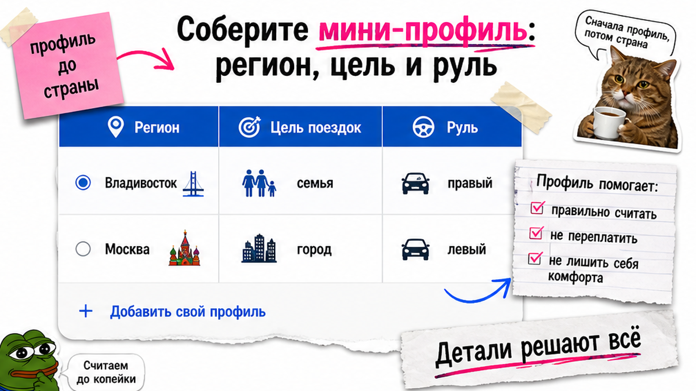
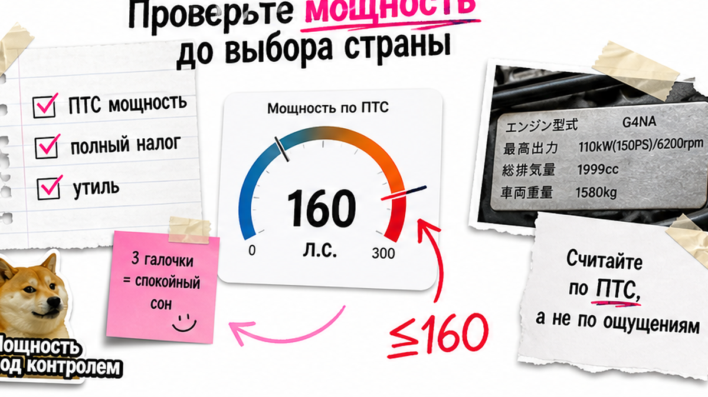
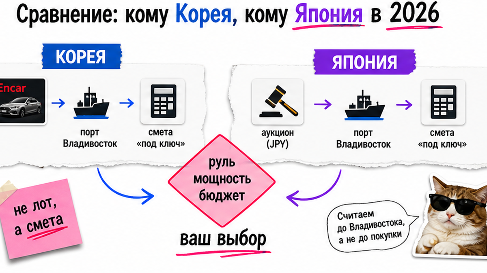

Алексей из Подмосковья почти внёс депозит за красивый Sportage с Encar: "дешевле рынка РФ". Друг во Владивостоке остановил: сначала мощность и утиль, потом страну. Турбо выше ориентира ~160 л.с. меняет экономику ввоза, а правый руль с японского аукциона для перепродажи в МО – отдельная история. Ниже – как выбрать авто из Кореи или Японии под полную пошлину 2026: четыре фильтра, таблица сравнения и два расчёта под ключ до любой оплаты.
TL;DR / Быстрый инсайт: Растаможка в РФ для Кореи и Японии считается по одним правилам (возраст, объём, мощность) – "выгоднее страна" часто миф. Решают руль, формат покупки и попадание в льготный порог мощности физлица (~160 л.с.). Сравнивайте только сметы под ключ, не цену лота. Депозит – после двух сопоставимых расчётов через каталог Авто-Сейлс.
В 2026 корейский б/у-импорт в РФ заметно просел после ужесточения утильсбора с декабря 2025: популярные турбо-кроссоверы часто выпадают из "выгодной" зоны. На практике это значит: сначала задача и регион, потом руль и лошадиные силы, и только затем две цифры "под ключ" через Владивосток – без гонки "чья страна круче".

Боль новичка простая: неясно, с чего начать – Корея или Япония. Ответ не в патриотизме к маркету, а в вашем сценарии.
Запишите три строки:
На пальцах: японский рынок почти всегда даёт правый руль (RHD). Корея – левый (LHD), привычный для МО, Питера и большей части страны. На Дальнем Востоке правый руль привычен и ликвиднее. Типичная ошибка – выбрать "дешёвый японский лот", а потом мучиться с перепродажей в Подмосковье.
Сделайте: если левый руль обязателен – первым смотрите Корею. Не делайте: откладывайте вопрос руля "на потом" после депозита.

Сюрприз для многих: ставки растаможки и утильсбора в РФ не зависят от того, "Корея это или Япония". Зависят от возраста, объёма и мощности. Для физлица критичен ориентир льготы около 160 л.с. – выше порога экономика ввоза часто "убивает" красивую цену объявления.
Например, в обзорах 2026 популярные Sportage 1.6T, Sorento 2.5, Santa Fe 2.5 часто выше порога. Льготные ориентиры Кореи в тех же разборах – Tucson / K5 / Sonata 2.0 около 150 л.с. Япония сильнее выбором Toyota/Honda и гибридов, которые реально влезают в комфортный коридор мощности.
Сделайте: зафиксируйте потолок л.с. и сегмент возраста до поиска лотов. Не делайте: влюбляйтесь в турбо-кроссовер "как у всех", не сверив мощность с порогом льготы.

| Критерий | Корея | Япония |
|---|---|---|
| Руль | Левый – удобнее для МО и еврочасти | Правый – ок на ДВ, сложнее для перепродажи в центре |
| Формат покупки | Encar (объявления, можно сравнивать без спешки) или корейские аукционы | Аукционы; физлицу нужен брокер с аккаунтом |
| Проверка | Карточка Encar + осмотр + история (Carhistory и аналоги) | Аукционный лист: оценка, дефекты, прозрачная "биография" лота |
| Сильные стороны | Оснащение, левый руль, Kia/Hyundai в нужном бюджете | Состояние, Toyota/Honda/гибриды, культура аукциона |
| Логистика | Часто через Владивосток (ро-ро/паром) | Тот же хаб – Владивосток |
| Растаможка/утиль | Общие правила РФ: возраст, объём, мощность | Те же правила – страна сама по себе не "дешевле" |
Итоговый вердикт: Берите Корею, если нужен левый руль и привычная перепродажа в европейской части. Берите Японию, если правый руль ок (ДВ) и важны состояние/гибрид/Toyota в рамках мощности. Страна без руля и л.с. – пустой спор.
Сделайте: выбирайте сторону по таблице под ваш регион. Не делайте: спорьте "японцы всегда честнее" без пакета проверки под выбранный рынок.
В реальном проекте выгода ломается, когда сравнивают цену объявления, а не смету под ключ. Под ключ – это лот + логистика + таможня/утиль + оформление до выдачи. Готовые суммы пошлин в статье не публикуем: цифры плавают, а ошибочный "калькулятор в голове" дороже консультации.
Соберите по одному-два кандидата из каждой страны в одном бюджете "под ключ" и запросите два сопоставимых расчёта. Логистика обоих рынков часто сходится во Владивостоке – хаб Авто-Сейлс (порт, СВХ, выдача). Сроки пути в обзорах – порядка нескольких дней до порта; дальше уже таможня и документы.
Схема до депозита:
Мини-профиль (регион/руль/л.с.) → 1–2 лота Корея + 1–2 Япония → Два расчёта под ключ → Пакет проверки → Выбор стороны → Депозит
Актуальные расчёты и подбор – в каталоге Авто-Сейлс. Форм на странице статьи нет: смета живёт в каталоге и переписке.
Сделайте: сравнивайте только две полные сметы в одной таблице. Не делайте: вносите депозит, пока нет цифры "под ключ" и пакета проверки.
Кажется, что "японцы всегда честнее корейцев". На практике рынки просто говорят на разных языках проверки.
Корея: Encar удобен тем, что можно смотреть объявления без гонки аукциона. До депозита нужны история/осмотр (связка с гайдом по Trust Encar и Carhistory). Япония: читайте аукционный лист с менеджером – оценка, отмеченные дефекты, комментарии. Прямой доступ физлица к японским аукционам закрыт, поэтому посредник с аккаунтом – норма, а не "лишнее звено".
Сделайте: требуйте пакет проверки до оплаты. Не делайте: верьте скрину "всё ок" без листа или VIN-истории.
Пройдите шаги по порядку – это ваш первый результат сегодня без команды "разработчиков сделки". Избегайте депозита до двух смет:
Детали заказа можно уточнить в Telegram @avtosales125. Офис: Владивосток, Днепровская 40а, стр. 4.
Сделайте: идите по чеклисту сверху вниз. Не делайте: перескакивайте к депозиту "пока лот не ушёл".
Критерий успеха простой. Вы можете вслух сказать: "для моего региона и цели беру X, потому что руль / ликвидность / мощность". У вас есть таблица двух вариантов без магических цен лота. Депозит не оплачен, пока нет расчёта под ключ через каталог или менеджера.
Дальше по сайту – отдельные чеклисты по растаможке, утильсбору и СВХ Владивосток. Сейчас достаточно закрыть выбор страны и смету. Если нужен подбор под ваш профиль – откройте каталог avto-sales125.ru и запросите два сопоставимых расчёта до перевода денег.
Материал проверен: редакция Авто-Сейлс (эксперты по авто под заказ из Японии, Кореи и Китая).
Достоверность: факты сверены с открытыми обзорами рынков Азии 2026, разъяснениями порога мощности для физлиц и практикой сопровождения заказов через Владивосток; актуальные расчёты под ключ – в каталоге.
Универсального ответа нет. Сначала руль и регион, затем мощность относительно ~160 л.с., потом две сметы под ключ. Страна сама по себе редко решает выгоду.
Да, если левый обязателен для МО/еврочасти и перепродажи. Зафиксируйте LHD в мини-профиле и сравнивайте корейские кандидаты между собой, а японский лот берите в расчёт только если готовы к правому рулю.
Когда правый руль ок, важны оценка листа и выбор Toyota/Honda/гибридов. Encar удобнее, если нужен левый руль и спокойное сравнение объявлений без торгов. В обоих случаях пакет проверки – до депозита.
Сведите в одну таблицу: цена лота, логистика, таможня/утиль, оформление. Запросите два расчёта под ключ в каталоге Авто-Сейлс. Не опирайтесь на "примерные" суммы из чужих постов.
Правила растаможки/утиля в РФ общие. Переход через льготный порог физлица меняет экономику сильнее, чем разница "Корея vs Япония" на одинаковых параметрах.
Не стоит. Сначала смета и проверка лота, потом оплата. Если торопят "лот уйдёт" без цифр – это красный флаг, а не скидка.